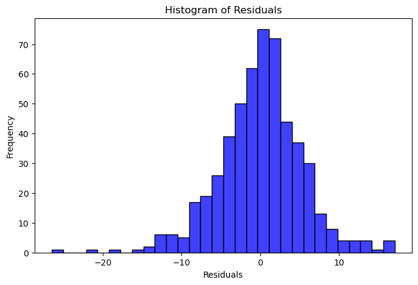
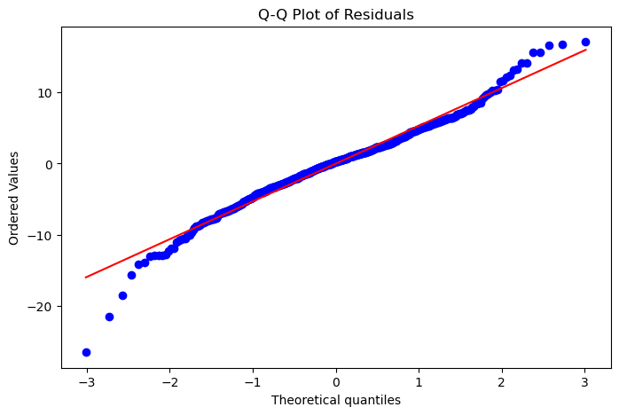
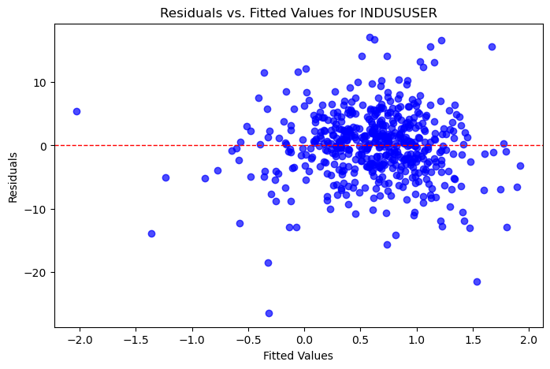
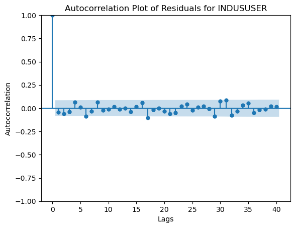

import pandas as pd
import statsmodels.api as sm
import statsmodels.stats.diagnostic as diag
from statsmodels.stats.stattools import durbin_watson
import seaborn as sns
import matplotlib.pyplot as plt
import numpy as np
import scipy.stats as statsGROUP 10 - Asabere Asante, Jonathan Smith , Jimmy Stevens, Jack Jurkovich
Group Project 1. CAPM and factor models
Import data from returns.xlsx
Variables:
Sector portfolio excess returns (return minus the risk free rate)
BMATRUSER Building materials
INDUSUSER Industrials
CNSMGUSER Consumer goods
FINANUSER Financials
TECNOUSER Technology
MktRF: Market return - risk free rate
SMB Fama-French Small minus Big
HML Fama- French High minus Low
RF risk free rate
Q1.
(5 points) Estimate CAPM regressions for each of the 5 portfolios.
(2 points) Which portfolio excess return exhibits the highest sensitivity to systematic risk and why?
(5 points) Which portfolios excess return is higher than that implied by the CAPM
(2 points) Is the CAPM rejected, and why?
data = pd.read_excel(r"C:\Users\KAsab\Desktop\Econometrics_Project\returns-1.xlsx")- (5 points) Estimate CAPM regressions for each of the 5 portfolios.
# List of portfolio returns
portfolios = ['BMATRUSER', 'INDUSUSER', 'CNSMGUSER', 'FINANUSER', 'TECNOUSER']# Variables
MktRF = data['Mkt-RF']
RF = data['RF']
SMB = data['SMB']
HML = data['HML']# CAPM Regression for each portfolio
capm_results = {}
for portfolio in portfolios:
excess_return = data[portfolio] - RF
X = sm.add_constant(MktRF) # Add constant for α
model = sm.OLS(excess_return, X).fit()
capm_results[portfolio] = modelfor portfolio, model in capm_results.items():
print(f"Summary for {portfolio}:")
print(model.summary())
print("\n" + "="*80 + "\n") # Separator for readabilitySummary for BMATRUSER:
OLS Regression Results
==============================================================================
Dep. Variable: y R-squared: 0.004
Model: OLS Adj. R-squared: 0.002
Method: Least Squares F-statistic: 1.914
Date: Wed, 04 Dec 2024 Prob (F-statistic): 0.167
Time: 21:30:02 Log-Likelihood: -1728.5
No. Observations: 532 AIC: 3461.
Df Residuals: 530 BIC: 3470.
Df Model: 1
Covariance Type: nonrobust
==============================================================================
coef std err t P>|t| [0.025 0.975]
------------------------------------------------------------------------------
const 0.3644 0.274 1.330 0.184 -0.174 0.903
Mkt-RF 0.0855 0.062 1.383 0.167 -0.036 0.207
==============================================================================
Omnibus: 41.328 Durbin-Watson: 2.077
Prob(Omnibus): 0.000 Jarque-Bera (JB): 186.325
Skew: -0.028 Prob(JB): 3.47e-41
Kurtosis: 5.899 Cond. No. 4.49
==============================================================================
Notes:
[1] Standard Errors assume that the covariance matrix of the errors is correctly specified.
================================================================================
Summary for INDUSUSER:
OLS Regression Results
==============================================================================
Dep. Variable: y R-squared: 0.008
Model: OLS Adj. R-squared: 0.006
Method: Least Squares F-statistic: 4.362
Date: Wed, 04 Dec 2024 Prob (F-statistic): 0.0372
Time: 21:30:02 Log-Likelihood: -1646.6
No. Observations: 532 AIC: 3297.
Df Residuals: 530 BIC: 3306.
Df Model: 1
Covariance Type: nonrobust
==============================================================================
coef std err t P>|t| [0.025 0.975]
------------------------------------------------------------------------------
const 0.5432 0.235 2.314 0.021 0.082 1.005
Mkt-RF 0.1107 0.053 2.089 0.037 0.007 0.215
==============================================================================
Omnibus: 37.025 Durbin-Watson: 2.071
Prob(Omnibus): 0.000 Jarque-Bera (JB): 100.631
Skew: -0.309 Prob(JB): 1.41e-22
Kurtosis: 5.039 Cond. No. 4.49
==============================================================================
Notes:
[1] Standard Errors assume that the covariance matrix of the errors is correctly specified.
================================================================================
Summary for CNSMGUSER:
OLS Regression Results
==============================================================================
Dep. Variable: y R-squared: 0.001
Model: OLS Adj. R-squared: -0.001
Method: Least Squares F-statistic: 0.4039
Date: Wed, 04 Dec 2024 Prob (F-statistic): 0.525
Time: 21:30:02 Log-Likelihood: -1624.0
No. Observations: 532 AIC: 3252.
Df Residuals: 530 BIC: 3261.
Df Model: 1
Covariance Type: nonrobust
==============================================================================
coef std err t P>|t| [0.025 0.975]
------------------------------------------------------------------------------
const 0.3028 0.225 1.345 0.179 -0.139 0.745
Mkt-RF 0.0323 0.051 0.636 0.525 -0.068 0.132
==============================================================================
Omnibus: 41.388 Durbin-Watson: 1.848
Prob(Omnibus): 0.000 Jarque-Bera (JB): 138.308
Skew: -0.276 Prob(JB): 9.27e-31
Kurtosis: 5.436 Cond. No. 4.49
==============================================================================
Notes:
[1] Standard Errors assume that the covariance matrix of the errors is correctly specified.
================================================================================
Summary for FINANUSER:
OLS Regression Results
==============================================================================
Dep. Variable: y R-squared: 0.014
Model: OLS Adj. R-squared: 0.012
Method: Least Squares F-statistic: 7.266
Date: Wed, 04 Dec 2024 Prob (F-statistic): 0.00725
Time: 21:30:02 Log-Likelihood: -1673.0
No. Observations: 532 AIC: 3350.
Df Residuals: 530 BIC: 3358.
Df Model: 1
Covariance Type: nonrobust
==============================================================================
coef std err t P>|t| [0.025 0.975]
------------------------------------------------------------------------------
const 0.4376 0.247 1.773 0.077 -0.047 0.922
Mkt-RF 0.1501 0.056 2.696 0.007 0.041 0.260
==============================================================================
Omnibus: 67.333 Durbin-Watson: 2.049
Prob(Omnibus): 0.000 Jarque-Bera (JB): 244.318
Skew: -0.530 Prob(JB): 8.85e-54
Kurtosis: 6.146 Cond. No. 4.49
==============================================================================
Notes:
[1] Standard Errors assume that the covariance matrix of the errors is correctly specified.
================================================================================
Summary for TECNOUSER:
OLS Regression Results
==============================================================================
Dep. Variable: y R-squared: 0.006
Model: OLS Adj. R-squared: 0.004
Method: Least Squares F-statistic: 3.004
Date: Wed, 04 Dec 2024 Prob (F-statistic): 0.0836
Time: 21:30:02 Log-Likelihood: -1774.1
No. Observations: 532 AIC: 3552.
Df Residuals: 530 BIC: 3561.
Df Model: 1
Covariance Type: nonrobust
==============================================================================
coef std err t P>|t| [0.025 0.975]
------------------------------------------------------------------------------
const 0.6393 0.298 2.142 0.033 0.053 1.226
Mkt-RF 0.1168 0.067 1.733 0.084 -0.016 0.249
==============================================================================
Omnibus: 18.459 Durbin-Watson: 2.114
Prob(Omnibus): 0.000 Jarque-Bera (JB): 41.272
Skew: -0.089 Prob(JB): 1.09e-09
Kurtosis: 4.353 Cond. No. 4.49
==============================================================================
Notes:
[1] Standard Errors assume that the covariance matrix of the errors is correctly specified.
================================================================================
Q1.
- (2 points) Which portfolio excess return exhibits the highest sensitivity to systematic risk and why?
The FINANUSER portfolio has the highest beta (Mkt-RF = 0.1501) among the portfolios. This indicates that its excess returns are most sensitive to systematic risk, as it has the strongest positive relationship with the market risk premium.
- (5 points) Which portfolios excess return is higher than that implied by the CAPM
From the summaries, the intercept (const) for INDUSUSER (0.5432, p-value = 0.021) is significant. This indicates that the INDUSUSER portfolio has excess returns higher than those predicted by the CAPM.
- (2 points) Is the CAPM rejected, and why? The CAPM is rejected because it fails to fully explain the variation in excess returns for the portfolios, as evidenced by the very low R-squared values across all regressions, indicating poor explanatory power. Additionally, the significant intercept for the INDUSUSER portfolio (p-value = 0.021) suggests that its excess returns are higher than what the CAPM predicts.These factors collectively indicate that the CAPM does not adequately capture the risk-return relationship for the portfolios analyzed
Q2. (2 points) Do the residuals of the CAPM regression for INDUSUSER appear to be distributed normally, and why?
# Residual analysis for 'INDUSUSER'
indus_model = capm_results['INDUSUSER']
residuals = indus_model.residplt.figure(figsize=(8, 5))
sns.histplot(residuals, bins=30, color='blue')
plt.title('Histogram of Residuals')
plt.xlabel('Residuals')
plt.ylabel('Frequency')
plt.show()
plt.figure(figsize=(8, 5))
stats.probplot(residuals, dist="norm", plot=plt)
plt.title('Q-Q Plot of Residuals')
plt.show()
The residuals of the CAPM regression for INDUSUSER appear approximately normally distributed, as indicated by the bell-shaped histogram and the Q-Q plot, where most points align closely with the diagonal line. However, there are noticeable deviations in the tails of the Q-Q plot, suggesting potential non-normality at the extremes, possibly due to outliers or heavy tails
Q3. (2 points). Do the residuals of the CAPM regression for INDUSUSER appear to exhibit heteroskedasticity?
residuals = indus_model.resid
fitted_values = indus_model.fittedvaluesplt.figure(figsize=(8, 5))
plt.scatter(fitted_values, residuals, alpha=0.7, color='blue')
plt.axhline(0, color='red', linestyle='--', linewidth=1) # Horizontal line at y=0
plt.title('Residuals vs. Fitted Values for INDUSUSER')
plt.xlabel('Fitted Values')
plt.ylabel('Residuals')
plt.show()
The Residuals vs. Fitted Values plot for INDUSUSER shows residuals scattered around zero without a clear pattern, suggesting that the variance of residuals remains relatively constant across fitted values. There is no visible cone or systematic pattern indicating heteroskedasticity. However, some outliers are present, which may warrant further investigation. Based on the plot alone, there does not appear to be strong evidence of heteroskedasticity in the residuals.
Q4. (2 points) Do the residuals of of the CAPM regression for INDUSUSER exhibit autocorrelation?
sm.graphics.tsa.plot_acf(indus_model.resid, lags=40, alpha=0.05)
plt.title('Autocorrelation Plot of Residuals for INDUSUSER')
plt.xlabel('Lags')
plt.ylabel('Autocorrelation')
plt.show()
The autocorrelation plot (ACF) of residuals for INDUSUSER shows that the autocorrelation at lag 0 is, as expected, 1, but for all other lags, the autocorrelation values fall well within the confidence intervals. This suggests that the residuals do not exhibit significant autocorrelation. Consequently, the assumption of independence of residuals is satisfied, and there is no evidence of autocorrelation in the residuals of the CAPM regression for INDUSUSER.
Q5.
- (2 points) Compute the HAC (Newey-West) standard errors for the CAPM regressions of INDUSUSER and FINANUSER.
# Compute HAC standard errors for INDUSUSER
indus_hac_se = indus_model.get_robustcov_results(cov_type='HAC', maxlags=1)
print("HAC Standard Errors for INDUSUSER:")
print(indus_hac_se.summary())HAC Standard Errors for INDUSUSER:
OLS Regression Results
==============================================================================
Dep. Variable: y R-squared: 0.008
Model: OLS Adj. R-squared: 0.006
Method: Least Squares F-statistic: 3.085
Date: Wed, 04 Dec 2024 Prob (F-statistic): 0.0796
Time: 20:46:56 Log-Likelihood: -1646.6
No. Observations: 532 AIC: 3297.
Df Residuals: 530 BIC: 3306.
Df Model: 1
Covariance Type: HAC
==============================================================================
coef std err t P>|t| [0.025 0.975]
------------------------------------------------------------------------------
const 0.5432 0.235 2.314 0.021 0.082 1.004
Mkt-RF 0.1107 0.063 1.756 0.080 -0.013 0.235
==============================================================================
Omnibus: 37.025 Durbin-Watson: 2.071
Prob(Omnibus): 0.000 Jarque-Bera (JB): 100.631
Skew: -0.309 Prob(JB): 1.41e-22
Kurtosis: 5.039 Cond. No. 4.49
==============================================================================
Notes:
[1] Standard Errors are heteroscedasticity and autocorrelation robust (HAC) using 1 lags and without small sample correction# Compute HAC standard errors for FINANUSER
finan_model = capm_results['FINANUSER'] # Access the FINANUSER model from the dictionary
finan_hac_se = finan_model.get_robustcov_results(cov_type='HAC', maxlags=1)
print("\nHAC Standard Errors for FINANUSER:")
print(finan_hac_se.summary())
HAC Standard Errors for FINANUSER:
OLS Regression Results
==============================================================================
Dep. Variable: y R-squared: 0.014
Model: OLS Adj. R-squared: 0.012
Method: Least Squares F-statistic: 6.201
Date: Wed, 04 Dec 2024 Prob (F-statistic): 0.0131
Time: 20:47:20 Log-Likelihood: -1673.0
No. Observations: 532 AIC: 3350.
Df Residuals: 530 BIC: 3358.
Df Model: 1
Covariance Type: HAC
==============================================================================
coef std err t P>|t| [0.025 0.975]
------------------------------------------------------------------------------
const 0.4376 0.243 1.797 0.073 -0.041 0.916
Mkt-RF 0.1501 0.060 2.490 0.013 0.032 0.269
==============================================================================
Omnibus: 67.333 Durbin-Watson: 2.049
Prob(Omnibus): 0.000 Jarque-Bera (JB): 244.318
Skew: -0.530 Prob(JB): 8.85e-54
Kurtosis: 6.146 Cond. No. 4.49
==============================================================================
Notes:
[1] Standard Errors are heteroscedasticity and autocorrelation robust (HAC) using 1 lags and without small sample correction- (4 points) How the differences between the HAC standard errors and the OLS standard errors change the evaluation of significance at 5% level of the MktRF variable for each of the two portfolios?
The HAC (Newey-West) standard errors adjust for heteroscedasticity and autocorrelation, leading to changes in the significance of the Mkt-RF variable. For the INDUSUSER portfolio, the HAC adjustment increases the standard error from 0.053 to 0.063, resulting in a p-value increase from 0.037 to 0.080, making the Mkt-RF variable no longer significant at the 5% level. Conversely, for the FINANUSER portfolio, the standard error increases slightly from 0.056 to 0.060, with the p-value rising from 0.007 to 0.013, but the Mkt-RF variable remains significant at the 5% level. Thus, while HAC adjustments reduce the strength of evidence for significance, only the INDUSUSER portfolio loses statistical significance.
Q6. (2 points) Compute the correlation matrix of MktRF, SMB, and HML. Can the correlation of MktRF with SMB and HML be viewed as small?
# Compute the correlation matrix
variables = data[['Mkt-RF', 'SMB', 'HML']] # Extract relevant variables
correlation_matrix = variables.corr()
# Display the correlation matrix
print("Correlation Matrix:")
print(correlation_matrix)Correlation Matrix:
Mkt-RF SMB HML
Mkt-RF 1.000000 0.240693 -0.256574
SMB 0.240693 1.000000 -0.221198
HML -0.256574 -0.221198 1.000000The correlation matrix indicates moderate relationships between Mkt-RF and the other two factors, with a correlation of 0.2407 with SMB and -0.2566 with HML. These values are not close to zero, meaning the correlations cannot be considered small. While they do not indicate strong dependencies, the moderate correlations suggest some interaction between Mkt-RF and the other factors, which may have implications for multicollinearity in regression models.
Q7.
Estimate a multivariate regression adding SMB and HML to the CAPM regressions for each of the 5 portfoliosa. (5 points)
# Multivariate Regression (CAPM + SMB + HML)
multivariate_results = {}
for portfolio in portfolios:
excess_return = data[portfolio] - RF
X = data[['Mkt-RF', 'SMB', 'HML']]
X = sm.add_constant(X)
model = sm.OLS(excess_return, X).fit()
multivariate_results[portfolio] = modelfor portfolio, model in multivariate_results.items():
print(f"Summary for {portfolio}:")
print(model.summary())
print("\n" + "="*80 + "\n") Summary for BMATRUSER:
OLS Regression Results
==============================================================================
Dep. Variable: y R-squared: 0.037
Model: OLS Adj. R-squared: 0.031
Method: Least Squares F-statistic: 6.752
Date: Wed, 04 Dec 2024 Prob (F-statistic): 0.000178
Time: 21:31:55 Log-Likelihood: -1719.5
No. Observations: 532 AIC: 3447.
Df Residuals: 528 BIC: 3464.
Df Model: 3
Covariance Type: nonrobust
==============================================================================
coef std err t P>|t| [0.025 0.975]
------------------------------------------------------------------------------
const 0.2379 0.273 0.873 0.383 -0.298 0.773
Mkt-RF 0.0682 0.064 1.061 0.289 -0.058 0.194
SMB 0.3601 0.094 3.832 0.000 0.175 0.545
HML 0.2472 0.098 2.520 0.012 0.055 0.440
==============================================================================
Omnibus: 44.657 Durbin-Watson: 2.114
Prob(Omnibus): 0.000 Jarque-Bera (JB): 200.812
Skew: -0.152 Prob(JB): 2.48e-44
Kurtosis: 5.994 Cond. No. 4.74
==============================================================================
Notes:
[1] Standard Errors assume that the covariance matrix of the errors is correctly specified.
================================================================================
Summary for INDUSUSER:
OLS Regression Results
==============================================================================
Dep. Variable: y R-squared: 0.038
Model: OLS Adj. R-squared: 0.032
Method: Least Squares F-statistic: 6.893
Date: Wed, 04 Dec 2024 Prob (F-statistic): 0.000147
Time: 21:31:55 Log-Likelihood: -1638.5
No. Observations: 532 AIC: 3285.
Df Residuals: 528 BIC: 3302.
Df Model: 3
Covariance Type: nonrobust
==============================================================================
coef std err t P>|t| [0.025 0.975]
------------------------------------------------------------------------------
const 0.4389 0.234 1.875 0.061 -0.021 0.899
Mkt-RF 0.0983 0.055 1.781 0.075 -0.010 0.207
SMB 0.2876 0.081 3.564 0.000 0.129 0.446
HML 0.2062 0.084 2.448 0.015 0.041 0.372
==============================================================================
Omnibus: 46.000 Durbin-Watson: 2.071
Prob(Omnibus): 0.000 Jarque-Bera (JB): 134.235
Skew: -0.388 Prob(JB): 7.10e-30
Kurtosis: 5.336 Cond. No. 4.74
==============================================================================
Notes:
[1] Standard Errors assume that the covariance matrix of the errors is correctly specified.
================================================================================
Summary for CNSMGUSER:
OLS Regression Results
==============================================================================
Dep. Variable: y R-squared: 0.048
Model: OLS Adj. R-squared: 0.043
Method: Least Squares F-statistic: 8.891
Date: Wed, 04 Dec 2024 Prob (F-statistic): 9.32e-06
Time: 21:31:55 Log-Likelihood: -1611.1
No. Observations: 532 AIC: 3230.
Df Residuals: 528 BIC: 3247.
Df Model: 3
Covariance Type: nonrobust
==============================================================================
coef std err t P>|t| [0.025 0.975]
------------------------------------------------------------------------------
const 0.1723 0.222 0.775 0.439 -0.264 0.609
Mkt-RF 0.0210 0.052 0.401 0.689 -0.082 0.124
SMB 0.3394 0.077 4.428 0.000 0.189 0.490
HML 0.2635 0.080 3.293 0.001 0.106 0.421
==============================================================================
Omnibus: 53.849 Durbin-Watson: 1.844
Prob(Omnibus): 0.000 Jarque-Bera (JB): 227.299
Skew: -0.329 Prob(JB): 4.39e-50
Kurtosis: 6.134 Cond. No. 4.74
==============================================================================
Notes:
[1] Standard Errors assume that the covariance matrix of the errors is correctly specified.
================================================================================
Summary for FINANUSER:
OLS Regression Results
==============================================================================
Dep. Variable: y R-squared: 0.050
Model: OLS Adj. R-squared: 0.044
Method: Least Squares F-statistic: 9.198
Date: Wed, 04 Dec 2024 Prob (F-statistic): 6.11e-06
Time: 21:31:55 Log-Likelihood: -1663.0
No. Observations: 532 AIC: 3334.
Df Residuals: 528 BIC: 3351.
Df Model: 3
Covariance Type: nonrobust
==============================================================================
coef std err t P>|t| [0.025 0.975]
------------------------------------------------------------------------------
const 0.3266 0.245 1.332 0.183 -0.155 0.808
Mkt-RF 0.1274 0.058 2.205 0.028 0.014 0.241
SMB 0.3515 0.084 4.161 0.000 0.186 0.518
HML 0.2071 0.088 2.347 0.019 0.034 0.380
==============================================================================
Omnibus: 76.752 Durbin-Watson: 2.052
Prob(Omnibus): 0.000 Jarque-Bera (JB): 325.396
Skew: -0.566 Prob(JB): 2.19e-71
Kurtosis: 6.660 Cond. No. 4.74
==============================================================================
Notes:
[1] Standard Errors assume that the covariance matrix of the errors is correctly specified.
================================================================================
Summary for TECNOUSER:
OLS Regression Results
==============================================================================
Dep. Variable: y R-squared: 0.032
Model: OLS Adj. R-squared: 0.026
Method: Least Squares F-statistic: 5.729
Date: Wed, 04 Dec 2024 Prob (F-statistic): 0.000731
Time: 21:31:55 Log-Likelihood: -1767.1
No. Observations: 532 AIC: 3542.
Df Residuals: 528 BIC: 3559.
Df Model: 3
Covariance Type: nonrobust
==============================================================================
coef std err t P>|t| [0.025 0.975]
------------------------------------------------------------------------------
const 0.5040 0.298 1.691 0.091 -0.082 1.090
Mkt-RF 0.1124 0.070 1.599 0.110 -0.026 0.250
SMB 0.3170 0.103 3.085 0.002 0.115 0.519
HML 0.2829 0.107 2.637 0.009 0.072 0.494
==============================================================================
Omnibus: 23.853 Durbin-Watson: 2.071
Prob(Omnibus): 0.000 Jarque-Bera (JB): 56.624
Skew: -0.175 Prob(JB): 5.06e-13
Kurtosis: 4.559 Cond. No. 4.74
==============================================================================
Notes:
[1] Standard Errors assume that the covariance matrix of the errors is correctly specified.
================================================================================
- (2 points) For which portfolios the coefficients of SMB and HML are significantly different from zero?
The coefficients of SMB and HML are significantly different from zero for all five portfolios (BMATRUSER, INDUSUSER, CNSMGUSER, FINANUSER, and TECNOUSER). This is evidenced by p-values below 0.05 across all regressions, indicating that the SMB and HML factors have a statistically significant impact on the excess returns of these portfolios. These results suggest that both size (SMB) and value (HML) effects play a meaningful role in explaining the variation in returns for all the portfolios analyzed.
- (3 points) Are there omitted variable biases in the original CAPM regressions for the 5 portfolios?
Yes, there are omitted variable biases in the original CAPM regressions for the five portfolios. Comparing the results of the original CAPM regressions (with only Mkt-RF) to the expanded three-factor model (with Mkt-RF, SMB, and HML), we observe significant changes in the coefficient estimates and their significance levels for Mkt-RF. For example, in the CAPM model, the Mkt-RF coefficient was significant for some portfolios, such as INDUSUSER and FINANUSER, but became less significant or insignificant in the three-factor model. Additionally, the inclusion of SMB and HML significantly improves the explanatory power of the model, as evidenced by higher R-squared values and significant coefficients for SMB and HML in all portfolios. These changes suggest that the exclusion of SMB and HML in the CAPM regressions biased the results, confirming omitted variable bias.